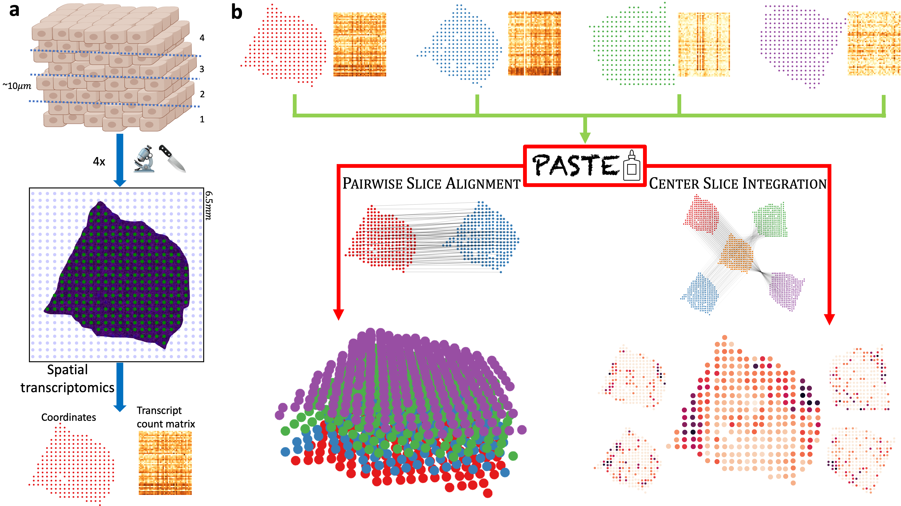

Welcome to PASTE3 documentation!
PASTE3 package that provides combined functionality of PASTE and PASTE2.
PASTE Alignment
PASTE is a computational method that leverages both gene expression similarity and spatial distances between spots to align and integrate spatial transcriptomics data.
{kind=link}
PASTE2 Alignment
PASTE2, the extension of PASTE, is a method for partial alignment and 3D reconstruction of spatial transcriptomics slices when they do not fully overlap in space.

PASTE3 Alignment
PASTE3 combines PASTE and PASTE2 to provide five main functionalities:
Pairwise Alignment: align spots across pairwise slices.
Center Alignment: integrate multiple slices into one center slice.
Partial Pairwise Alignment: given a pair of slices and their overlap percentage, find a partial alignment matrix.
Select Overlap: decide the overlap percentage between two slices
Partial Stack Slices Pairwise: given a sequence of consecutive slices and the partial alignments between them, project all slices onto the same 2D coordinate system. 3D reconstruction can be done by assigning a z-value to each slice.
Contents: